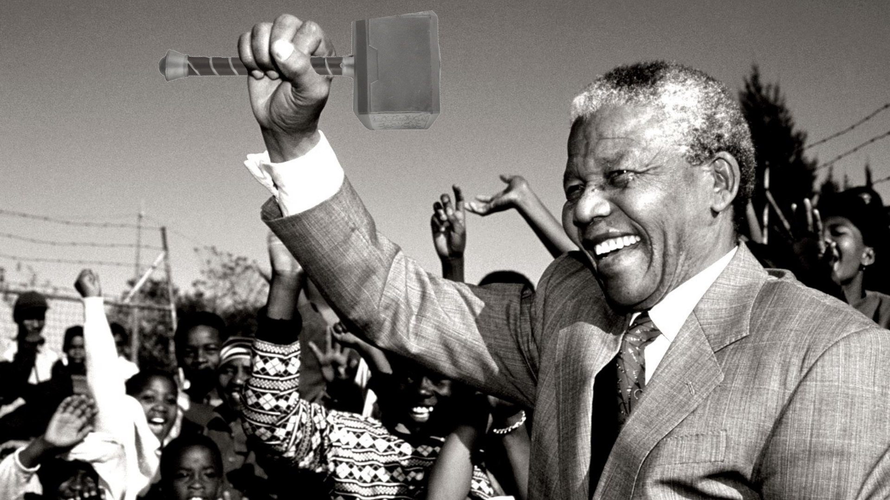
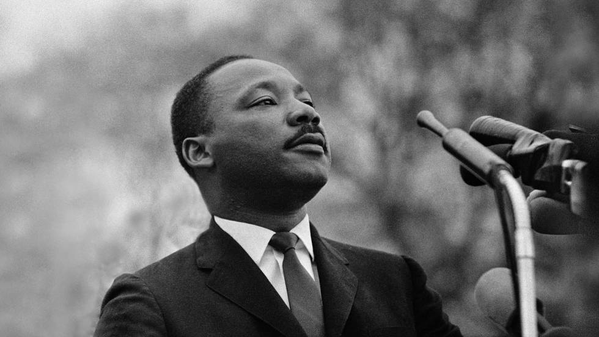
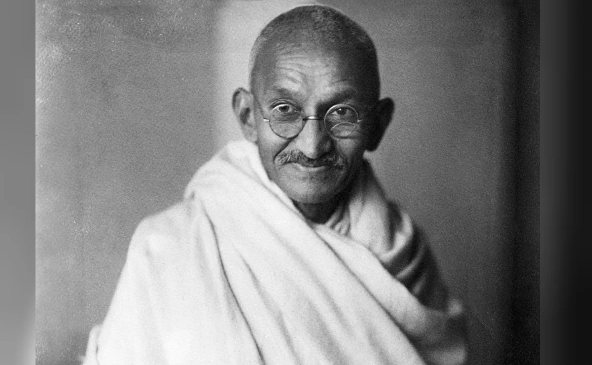
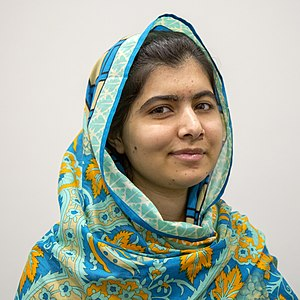
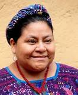
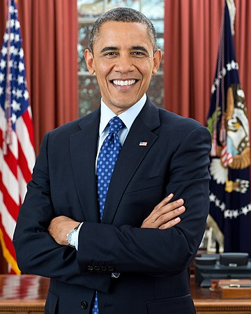

|  |
Un semidios con un poder portentoso gracias a su martillo, que le fue regalado por su padre, el gran Odín, padre de todos los Dioses de Asgard. Thor viaja por accidente a la tierra y desde ese momento pasa a ser su protector ante diversas fuerzas espaciales malignas. |
|---|---|
|  |
Martin Luther King Jr.Nota 1 nacido como Michael King Jr. (Atlanta, Georgia; 15 de enero de 1929-Memphis, Tennessee; 4 de abril de 1968) fue un reconocido pastor estadounidense de la Iglesia bautista1 y activista que desarrolló una labor crucial en Estados Unidos al frente del movimiento por los derechos civiles para los afroestadounidenses y que, además, participó como activista en numerosas protestas contra la guerra de Vietnam y la pobreza en general. Por esa actividad encaminada a terminar con la segregación estadounidense y la discriminación racial a través de medios no violentos, fue condecorado con el Premio Nobel de la PazNota 2 en 1964. Cuatro años después, en una época en que su labor se había orientado en especial hacia la oposición a la guerra y la lucha contra la pobreza, fue asesinado en Memphis, cuando se preparaba para asistir a una cena informal de amigos. |
|  |
Mahatma Gandhi Desde 1919 perteneció abiertamente al frente del movimiento nacionalista indio. Instauró métodos de lucha social novedosos como la huelga de hambre y en sus programas rechazaba la lucha armada y realizaba una predicación de la áhimsa (no violencia) como medio para resistir al dominio británico. Defendía y promovía ampliamente la total fidelidad a los dictados de la conciencia, llegando incluso a la desobediencia civil si fuese necesario; además, bregó por el retorno a las viejas tradiciones hinduistas. Mantuvo correspondencia con León Tolstói, quien influyó en su concepto de resistencia no violenta. Fue el inspirador de la marcha de la sal, una manifestación a través del país contra los impuestos a los que estaba sujeto este producto. |
|  |
Malala Yousafzai Malala es conocida por su activismo a favor de los derechos civiles, especialmente de los derechos de las mujeres en el valle del río Swat, en la provincia de Khyber Pakhtunkhwa del noroeste de Pakistán, donde el régimen talibán ha prohibido la asistencia a la escuela de las niñas, la promoción de Yousafzai se ha convertido en un movimiento con apoyo internacional. |
|  |
Rigoberta Menchú Rigoberta Menchú Tum (Uspantán, Quiché; 9 de enero de 1959) es una líder indígena y activista guatemalteca, miembro del grupo maya quiché, defensora de los derechos humanos, embajadora de buena voluntad de la UNESCO y ganadora del Premio Nobel de la Paz (1992) y el Premio Príncipe de Asturias de Cooperación Internacional (1998). Se ha destacado por su liderazgo al frente de las luchas sociales en el ámbito nacional e internacional. El 12 de febrero de 2007, anunció que se postularía en las elecciones presidenciales de Guatemala del 2007, por la coalición de partidos WINAQ y Encuentro por Guatemala; quedó en quinto lugar con un 3,09 %. El 7 de mayo de 2011 el partido indígena WINAQ junto a otros partidos la proclamó como candidata presidencial para las elecciones presidenciales del 11 de septiembre de 2011 en el Frente Amplio de Guatemala,1 en la ciudad de Uspantán |
|  |
Barack Obama Barack Hussein Obama II1, es un político estadounidense que ejerció como el 44.º presidente de los Estados Unidos de América desde el 20 de enero de 2009 hasta el 20 de enero de 2017.2 Fue senador por el estado de Illinois desde el 3 de enero de 2005 hasta su renuncia el 16 de noviembre de 2008.3 Además, es el quinto legislador afroamericano en el Senado de los Estados Unidos, tercero desde la era de reconstrucción. También fue el primer candidato afroestadounidense nominado a la presidencia por el Partido Demócrata y es el primero en ejercer el cargo presidencial.4 |